Staging continuation · actual Studio · 23 September 2026
Source-backed geometry and exact evidence, through the same Studio workflow.
Final local production-server run 304725d67e928f064d3951c3781592c3d706e377: three browser journeys passed with no skipped or flaky tests. Baseline images come from c81ce5de3e07. Each image links to its unchanged original capture.
This is software-WebGL correctness and visual evidence. D0 is explicitly synthetic. D1 preserves one real 3DBAG exterior in labelled local engineering metres; global placement, internal floors, analytical mesh volume, GPU performance and public deployment remain unqualified.
The supplied basement is visible below its parcel outline.
Same 1440 × 900 floor selection and source pack. Overlapping surface fills are hidden only for the lower-level display. Source coordinates, recorded levels and parcel boundaries remain intact.
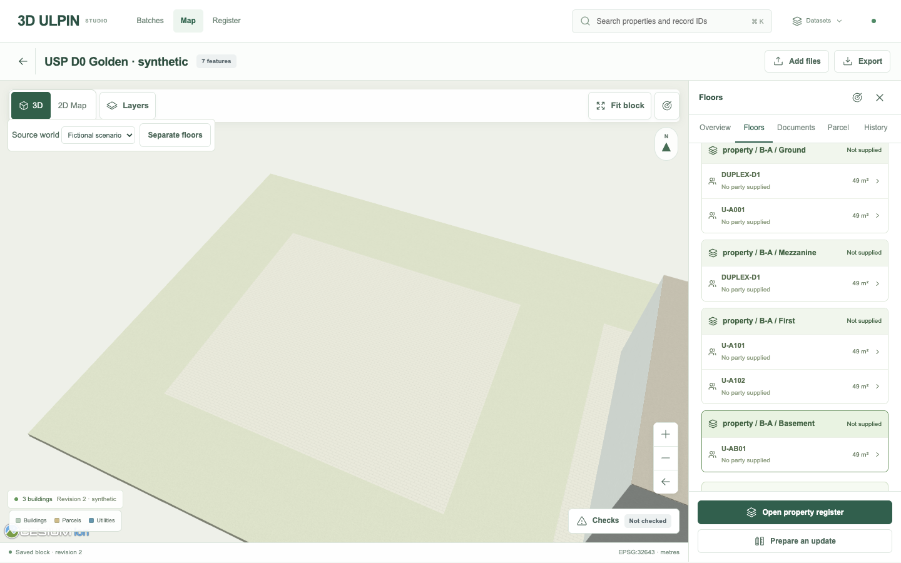
Baseline c81ce5d · basement selected, surface fills obscure it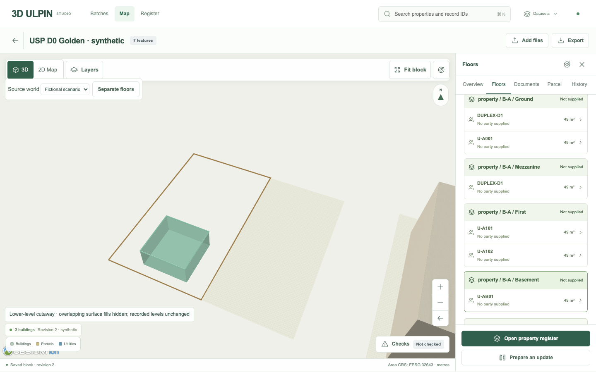
Final 304725d67e92 · same floor view, supplied basement visible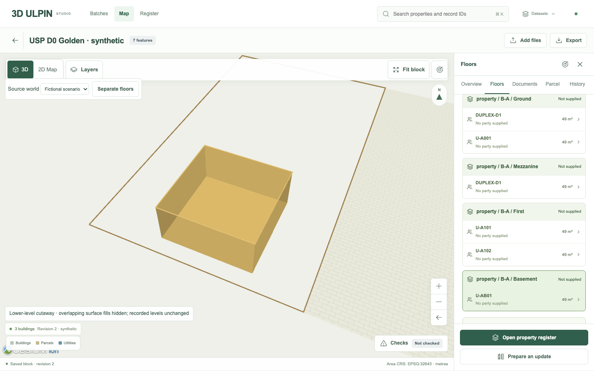
Actual U-AB01 focus and exact Cesium identity pick · supplied interval −3.2…0 m
The real roof remains source-shaped on a narrow screen.
Same 390 × 844 mobile profile. The frame limitation is legible above the roof; attribution and controls remain accessible. No interior is inferred from the exterior mesh.
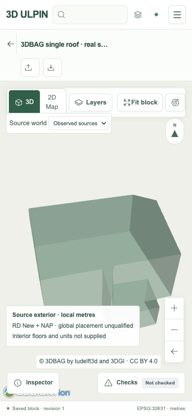
Baseline · caption over the lower source geometry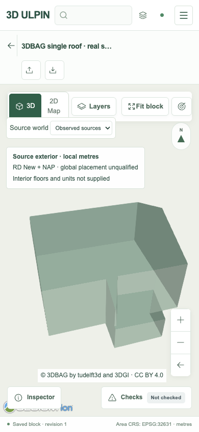
Final · complete local exterior and separated caption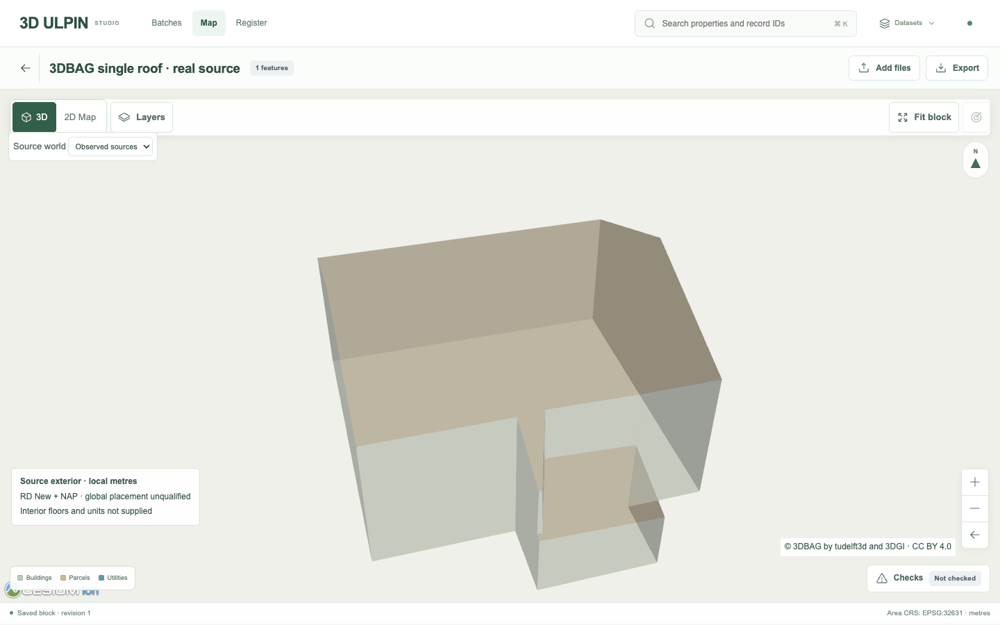
Final desktop · 19 original LoD 2.2 faces, including three sloped roof faces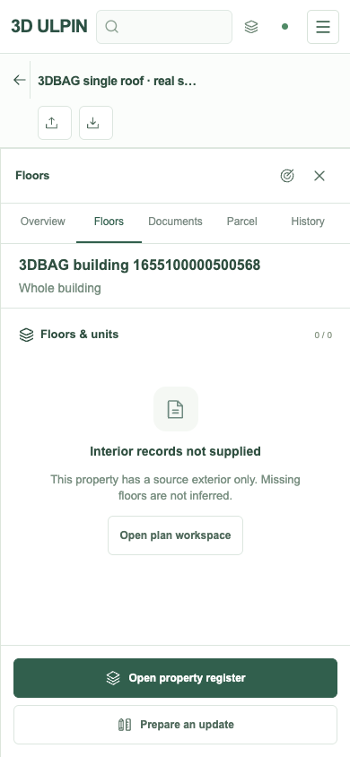
Mobile inspector · the native building identity remains visible and interiors remain unavailable
The exact unit packet survives reload.
U-A101 retains its selected building/unit scope and exact source locators. The compiled packet contains ONLY_A101 and excludes NEVER_A102. Original and derivative hashes are checked through actual HTTP/S3 services.
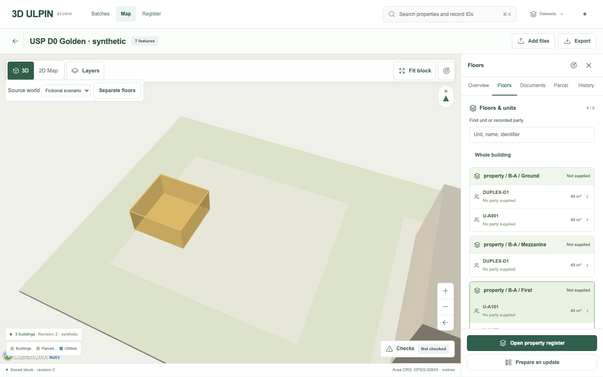
Selected unit · exact linked evidence and packet action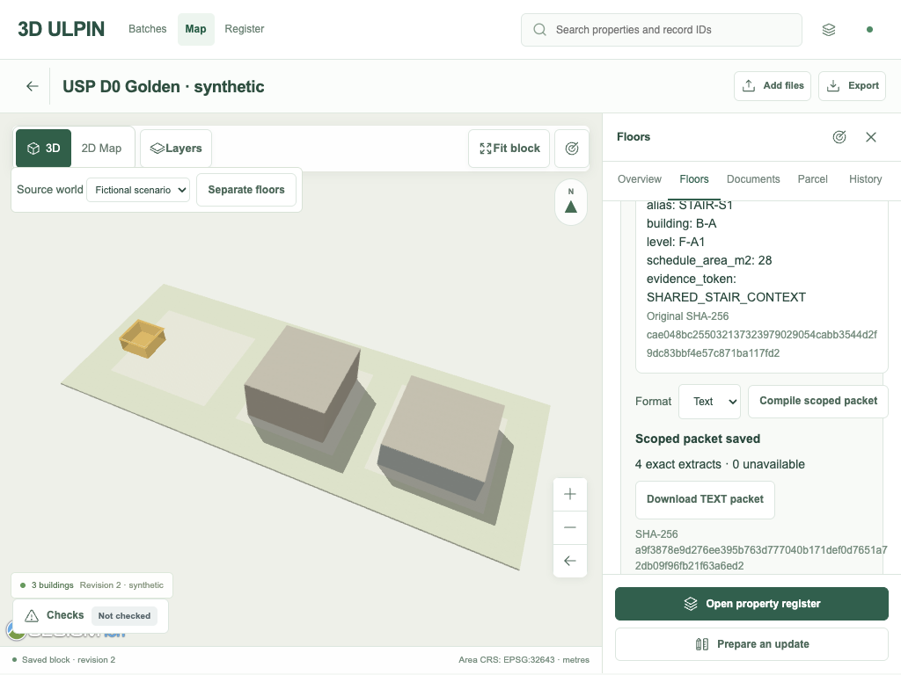
1024 × 768 · saved packet and selected context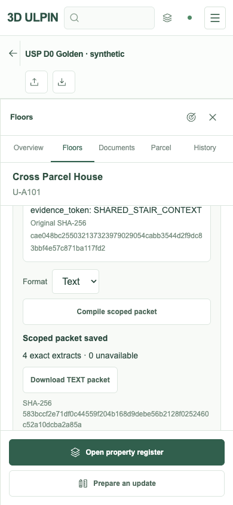
Baseline mobile packetFinal mobile · U-A101 scope and saved packet remain readableRetained design reference and the actual product.
The retained reference guides header, sage palette, shared-map emphasis and contextual inspector composition. Its architectural detail is not source evidence. The actual D0 fixture remains a sparse, labelled synthetic neighbourhood; photographic or pixel-equivalent fidelity is not claimed.
 Retained original design reference · hash verified against comparison-manifest.json
Retained original design reference · hash verified against comparison-manifest.json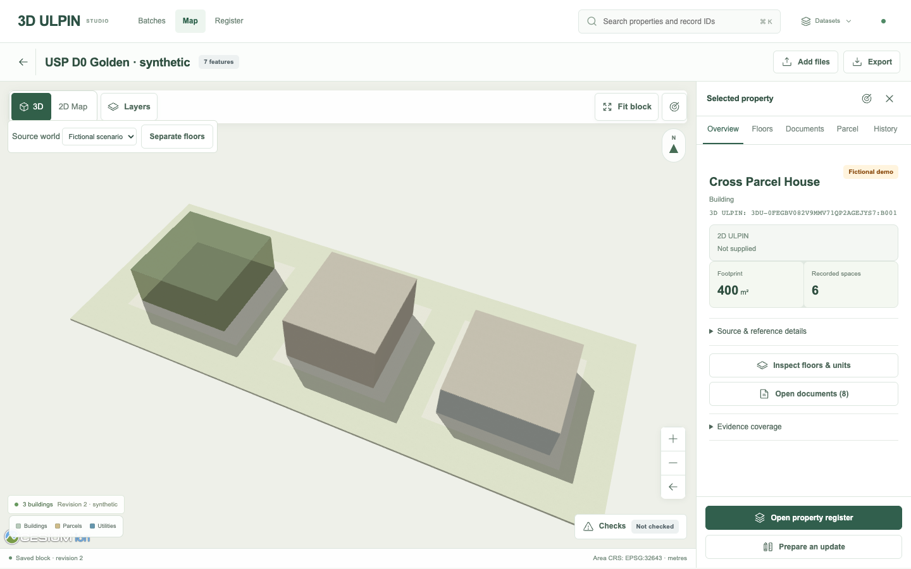
Actual D0 Studio · 1440 × 900, source-backed synthetic fixtureReview findings and failed attempts remain in the evidence history. No background screenshot, mock successful API or replacement showcase supplies these results.